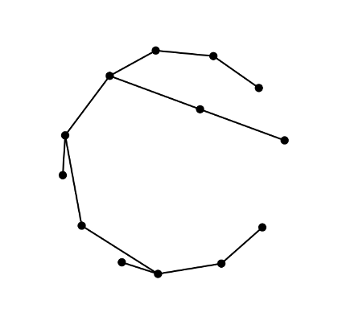
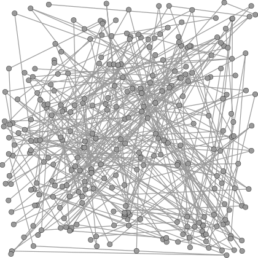
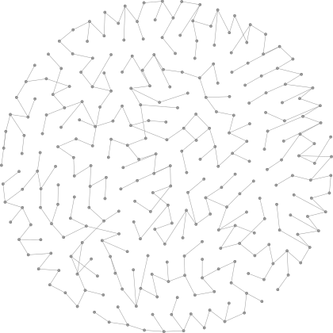

In this post we demonstrate how to use Gephi to find a nice drawing of a graph with hundreds of vertices.
A nice drawing here is one with few edge crossings whose nodes are evenly distributed over a fixed area and has a small number of different edge lengths.
Lobster graphs
From MathWorld:
a lobster is a tree having the property that the removal of leaves leaves a caterpillar
where
a caterpillar is a tree such that removal of its endpoints leaves a path graph.

Lobsters, being trees, are planar graphs. So plane drawings of small lobsters, like the one above, can be achieved easily. Although this drawing is not particularly elegant one it does possess the dual benefit of highlighting both the planarity and the lobsterity of the graph.
For comparison, consider the following drawing of a large lobster graph.

In this drawing neither the planarity nor the lobsterity of the graph are apparent.
This lobster graph has 287 vertices and, being a tree, 286 edges was generated in Python using NetworkX.
The following command creates a file in Graph Exchange Format (GEXF).
$ python -c "import networkx as nx;nx.write_gexf(nx.random_lobster(100, 0.5, 0.5, seed=0), 'lobster.gexf')"random_lobster(n, p, q, seed=None) returns a lobster with approximately n vertices in the backbone, backbone edges with probability p and leaves with probability q.
The seed is set to zero for the sake of reproducibility.
Force-directed drawing algorithms
The type of drawing we are looking for, one with as few edge crossings and different edge lengths as possible is the kind of drawing that force-directed algorithms are designed to produce. Force-directed drawing algorithms use simulations of forces between nodes to decide node placements. Electrical forces have the effect of making non-adjacent nodes move further apart and spring forces between adjacent nodes have the effect of reducing variability of edge lengths.
Gephi makes the standard Fruchterman-Reingold force-directed algorithm available alongside a layout method called Force-Atlas.
These two layout methods, although both built on force-directed foundations, produce wildly different layouts with the same lobster graph input.
Beginning with random placement of nodes, the Fruchterman-Reingold algorithm in Gephi produces a layout having uniform distribution of nodes across a disk. Albeit one having very many edge-crossings.

This is a well-known problem with force-directed methods. The algorithm has probably discovered a local minimum. Unfortunately this local minimum is far from the global minimum.
The Force-Atlas algorithm, on the other hand, creates a layout which has few crossings but without the nice node distribution of the Fruchterman-Reingold layout.

Gephi makes it easy to experiment with combining methods to produce a layout which has the benefits of both.
Combining Force-Atlas and Fruchterman-Reingold Layout Algorithms
First using the Force-Atlas method to find a nearly plane drawing and then using the Fruchterman-Reingold algorithm on the resulting drawing produces a new drawing that is both nearly planar and has evenly distributed nodes with relatively few different edge lengths.

Another benefit of Gephi, not illustrated here, is that some of the layout methods allow for interaction during execution. This means that, where there are edge-crossings we can manually move vertices around a little bit to help eliminate them. So a layout like the one shown, which has few edge crossings can probably be improved to a plane drawing with a little manual interaction.